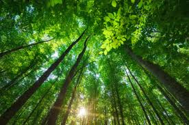
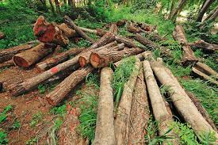

Forests are the essential for the sustainability of planet earth. Forests play a fundamental role in combating rural poverty,ensuring food security and providing
people with livehoods. They deliever vital enviromental services such as clean air and water, the conservation of biodiversity and combating climate change. Forests are
very important and grow in many places around the world. They are fundamental life forms and provide for the continuity of the world's biodivesity, livehood,
and environmental adaptive responses.
There are many reasons why forests are an important feature for the environment and in our daily lives.
Supports Ecosystems and Habitats
Protects Watershed Areas
Supports Biodiversity
Purifies the Air
Stabilize Climate
Enrich the Soil
Regulate the Water Cycle
Medicinal Value
Economic Significance
Types of Forests

1.Tropical rainforests
Hugely dense, lush forest with canpies preventing sunlight form getting to the floor of the forest.
All year high temperatures and abundant rainfall.
Locate near the equator.
A vital storehouse of biodiversity, sustaining millions of different animals, birds, algae and species.
2.Sub-tropical forests
Locate at the south and north of the tropical forests.
Trees here are adapted to resit the summer drought.
3.Mediterranean forests
Located at Eastern North America, Northeastern Asia, and western and eastern Europe.
The growing season is short and almost all trees are evergreen, but mixed with hardwood and softwood.
4.Temperate forests
Located at Eastern North America, Northeastern Asia, and Western and eastern Europe.
Mix of deciduous and coniferous evergreen trees.
Usually, the broad-leaved hardwood trees shed leaves annually.
There are well-defined seasons with a distinct winter and sufficient rainfall.
5.Coniferous forests
Located in the cold, windy regions around the poles.
They come in both hardwoods and conifers.
The hardwoods are deciduos.
The conifers are evergreen and structurally adapted to withstand the long drought-like conditions of the long winters.
6.Montane forests
Known as cloud forests beacause they receive most of their precipitation from the mist or fog that comes up from the lowlands.
Usually found in high-elevation tropical, subtropical and temperate zones.
Plants and animals in these forests are adapted to withstanding the cold, wet conditions and intense sunlight.
Trees are mainly conifers.
7.Plantation forests
Has around 7% of global forest cover (140 million hectares).
Produces more sustainable timber and fibre than natural forests.
Plantations produce around 40% of industrial wood.
Plantation forests are on the increase.
Deforestation
Deforestation is the cutting down of trees in a large area,the destruction of forests by people, destroying large areas of tropical rainforests.
Myanmar is the third highest deforestation rate in Asia, it was so obvious that polices and laws on enviromental conservation were weak.
Due to rapid deforestation, the country faced its severest weather conditions in 2015 and 2016.
Causes And Effects Of Deforestation In Myanmar Environmental Sciences
Causes of deforestation
The meaning of deforestation is cutting, clearing and removing of trees for various reasons such as logging, slashing-and-burning agriculture,
clearing land for livestock, building dam. Sometimes, natural disatsters can extremely destruct forests. For instance, Cyclone Nargis destroyed
a lot of trees in Myanmar on 2 and 3 May 2008. Deforestation can be caused not only human activities, but also natural disasters.

In Myanmar, government exports a lot of natural resources to other countries, but they got more money by exporting timber. According to the
parlimentary Natural Resources and Environment Conversation Committee, Myanmar exports a lot of teaks by legal or illegal. Myanmar exported 1.6 million
tones of teak per annually to neighbouring countries such as India, China, Bangladesh, Thailand and Malysia. According to statistics, Myanmar has
more than 16.32 million hectares of forest, and the area of teak is 24,300 hectares while the area of hardwood is 324,000 hectares. Almost
1.98 million cubic meters of hardwood and 283,000 cubic meters of teak are used in Myanmar per annual. As a result, cutting a lot of trees for
exporting is treatening Myanmar forests.
Overpopulation affect on forests because they destroy a lot of trees for their profit. In Myanmar, forest fire is one of the main problems to destory forests.
Myanmar lost up to 10 tons of forest fuel because of forest fire. As a result, every 30 to 70 tons of top forest soil are destryed in Myanmar. Myanmar is
facing natural disasters such as cyclones, landslides, earthquakes, tsunami, fire and drought. They are also real threats to Myanmar's environment.
Effects of deforestation
We can deduce the massive effects of deforestation and tree-cutting activities. Let us see a few below:
Soil erosion destruction
In Myanmar, soil erosion is one of the most serious problems, so the agricultural products of Myanmar are falling.
Soils are exposed to the sun's heat. Soil moisture is dried up, nutrients evaporate and bacteria that help break down organic matter are affected.
Eventually, rain washes down the soil surfaces and erosion takes place. Soils never get their full potential back. If soil erosion cannot be preserved,
it will lead to flooding.
Water Cycle
When forests are destroyed, the atmosphere, water bodies and the water table are all affected. Trees absorb and retain water in their roots. A large
part of the water that ciuculates in the ecosystem of rainforests remains inside the plants. Some of this moisture is transpired into the atmosphere. When
this process is broken, the atmosphere and water bodies begin to dry out. The watershed potential is compromised and less water will run through the rivers.
Loss of Biodiversity
Many wonderful species of plants and animals have been lost, and many others remain endangered. More than 80% of the world's species remain in the
Tropical Rainforest. It is estimated that about 50 to 100 species of animals are being lost each day as a result of destruction of their habitats, and that
is a tragedly.
Climate Change
Plant absorbs CO2 (a greenhouse gas)from the atmosphere and uses it to produce food. In return, it gives off Oxygen. Destroying the forests means CO2
will remain in the atmosphere and in addition, destroyed vegetation will give off more CO2 stored in them as they decompose.This will alter the climate of
that region. Cool climate may get a lot hotter and hot places may get a lot cooler.
Deforesatition occurs when forest land is cleared, usually to harvest the timber or clear space for agricultural operations.
More than 25 percent of the land on Earth is covered by forests, but millions of hectares of ecosystem are destroyed every year.
Over half of the world's forests are found in just seven countries, Brazil, Canada, China, the Democratic Republic of Congo, Indonesia, Russia, and the
United States. Therefore, while the disadvantages of deforestation are felt on a global scale, the decision to clear forest land belongs to only a
handful of governments. Deforestation threatens future scientic discoveries of species that could be useful to mankind.
Forest Degradation
Forest degradation is different from deforestation. Degradation is used to mean the destruction or reduction in quality of specific aspects of forests. It can
result in a decrease in tree cover, changes in their structure or a reduction in the number of species that can be found there. If acid rain destroy trees in a
vast area, it can be called forest degradation.
Causes of Forest Degradation
Climate Change
Forest Fires
Pets and Diseases
Air Pollution
Forest Fragmentation
Land Pollution
Soil Erosion and Sedimentation
What is a mangrove?
Mangroves are a community of tropical trees that have adapted to a salt-water environment. Mangroves play a critical role as part of the
interdependent coral reef ecosystem. This type of ecosystem is found exclusively in tropical and subtropical regions of the planet.
Mangrove Deforestation in Myanmar
Mangrove Deforestation in Myanmar is the clearing of mangrove forests, usually for commercial uses or resources extraction, which is occuring mainly
in 3 different regions: Rakhine State, Ayeyarwaddy Mega Delta, and Tanintharyi Division. The mangrove forests in Ayeyarwaddy Mega Delta are the largest
but are also the most affected by human actions. There are also natural threats that contribute to mangrove deforestation such as soil erosion. There has been recent increased attention to conserve and restore these forests through rehablilitation projects and
policies. These mangrove forests are very important to the country's economy, climate and biodiversity.
Importance of Mangrove Forests
Mangrove forests play a major role in Myanmar's economy since it provides natural resources for both personal and commercial uses. They ameliorate the
negative impacts of natural disasters such as cyclones and storms by stabilizing shorelines. They also provide other climate benefits. They create protected
zones where young fish and other marine life can grow and thrive. They also protect coastal communities from flooding during storm surges. Mangrove forests
also greatly contribute to ameliorating global warming because they are carbon dense and they recycle greenhouse gases such as carbon dioxide into oxygen, which is beneficial
for humans and other living creatures.